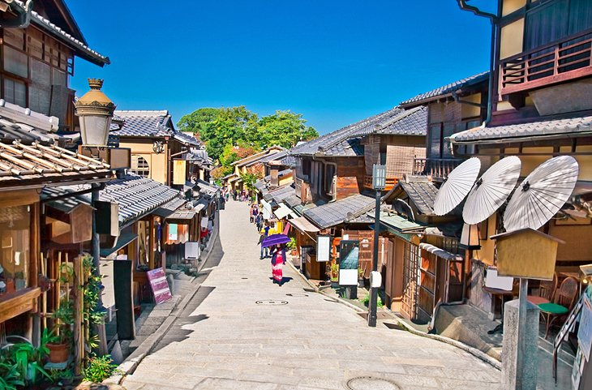
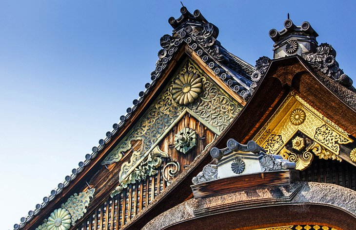

Fushimi-Inari Taisha Shrine
One of Japan's most famous shrines, the Fushimi-Inari Taisha Shrine is a must-visit when in Kyoto.
Founded in AD 711 and dedicated to the goddess of rice-growing, Ukanomitama-no-mikoto,
the shrine is still frequented by merchants and tradesmen who pray for prosperity.
1/5

Fushimi-Inari Taisha Shrine
Gion's Geishas and Temples
Famous as an entertainment and geisha district,
Gion is an area of Kyoto that is well suited to explore on foot. Located on the eastern bank of the Kamogawa River,
Gion is an eclectic mix of modern architecture and historical beauty that provides a unique taste of numerous Japanese traditions,
from the elaborately dressed geishas to well-preserved 17th-century restaurants and teahouses offering a glimpse of old Japan.
2/5

Gion's Geishas and Temples
The Byōdō-in Temple
The Byōdō-in Temple, established in AD 988, boasts many unique buildings,
shrines, and artworks and is worthy of a visit. Highlights include the Phoenix Hall (Hoo-do),
with its bronze phoenixes on its two gables and rich interior décor. This attractive hall also features 11th-century paintings,
including an imposing gilded figure of Amida, and an altar and ceiling inlaid with bronze and mother-of-pearl..
3/5

The Byōdō-in Temple
Nijo Castle
Nijo Castle (Nijō-jō), complete with well-preserved walls,
towers, and a moat, was built in 1603 and later served as the seat of government. The complex has several buildings containing many significant works of art,
and is famous as the location chosen by the emperor to issue the rescript abolishing the country's once powerful Shogunate.
4/5

Nijo Castle
Kinkaku-ji: The Golden Pavilion
Originally built in the 14th century as a retirement
villa for Shogun Ashikaga Yoshimitsu and now a Zen Buddhist temple, the magnificent Golden Pavilion (Kinkaku-ji)
is one of Kyoto's most picturesque attractions.
5/5

Kinkaku-ji: The Golden Pavilion